Kapitel 1: Anreise & das weiße Maskat
Unterwegs zwischen Tradition und Arbeitsalltag
Über den Wolken auf dem Weg in den Oman: Der schneebedeckte Krater des Vulkans Nemrut Dağı in Ostanatolien. Schon der Anflug auf die Arabische Halbinsel bot spektakuläre Ausblicke, bevor wir in der Hauptstadtregion Maskat landeten.
Schon bei der Ankunft am Flughafen begegneten uns Männer in weißen Gewändern und Turbanen mit einem freundlichen „Welcome to Oman“. Der islamische Friedensgruß „As-salamu alaykum“ begegnete uns auf der Straße immer wieder als herzliches Zeichen der Gastfreundschaft.
Der Alltag im Oman wird auch von unzähligen Arbeitsmigranten aus Ländern wie Bangladesch, Indien oder Äthiopien getragen, die in Hotels als Portiers, in Kfz-Werkstätten, auf den Baustellen sowie in unzähligen kleinen Coffee-Shops das öffentliche Leben am Laufen halten.
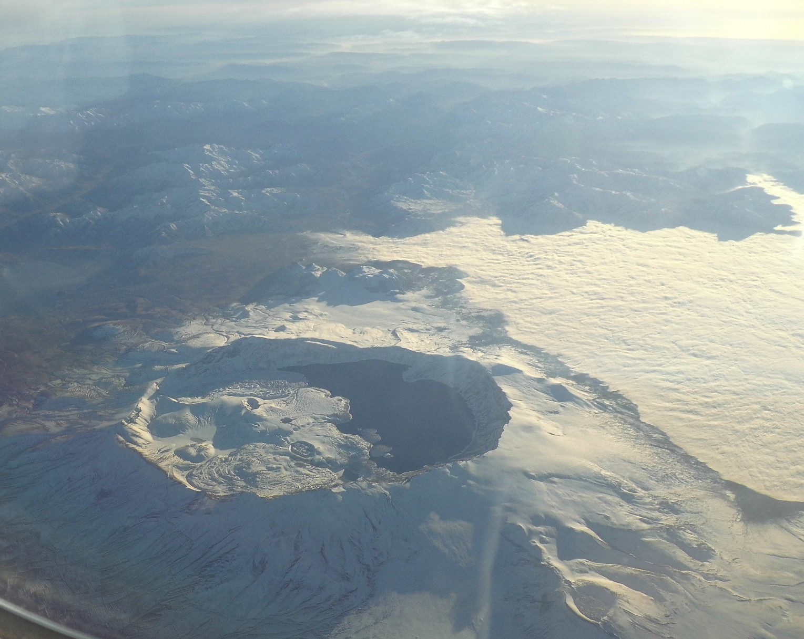
Blick aus dem Hotelzimmer
Der erste Blick am Morgen aus dem Hotelzimmer offenbarte sofort den ganz besonderen Charme dieses Landes: Flache, strahlend weiße Villen und Minarette.
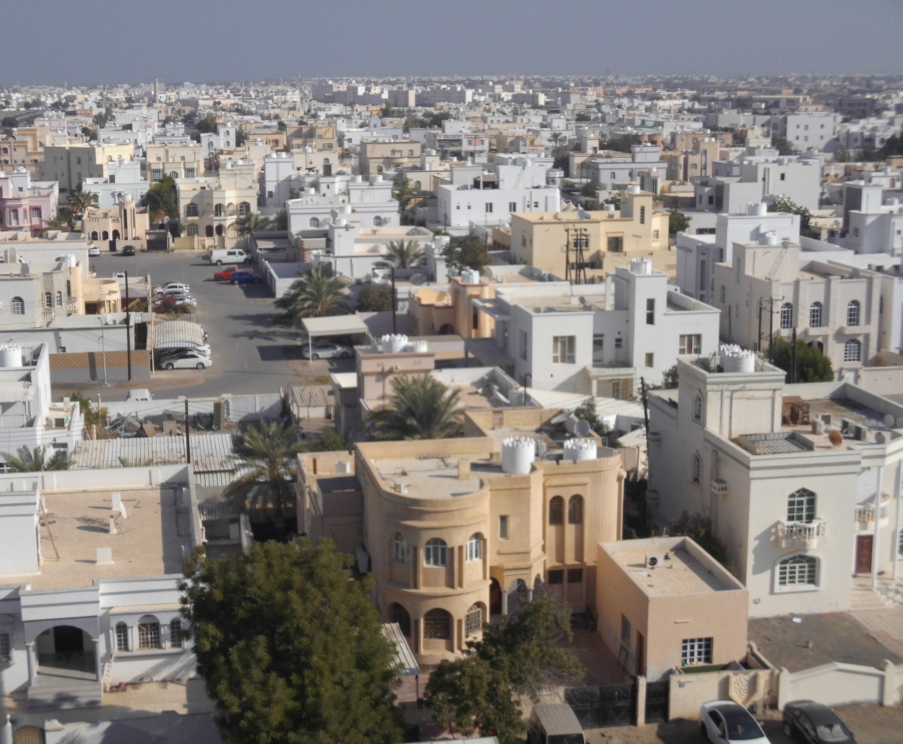
Fahrt durch die Stadt
Mit dem Mietwagen tauchten wir direkt in das entspannte Alltagsleben ein. Auf breiten Straßen ging es vorbei an kleinen Geschäften, Werkstätten und unzähligen weißen Geländewagen hinaus aus der Stadt. In Barka steht das eindrucksvolle Barka Fort direkt in Meeresnähe. Die Festung aus dem 17. und 18. Jahrhundert zeugt von der strategischen Bedeutung der Region für den Seehandel und den Schutz vor Eindringlingen. Die mächtigen Mauern und Wehrtürme vermitteln sofort das Gefühl, in die echte, lebendige Geschichte des Orients einzutauchen.
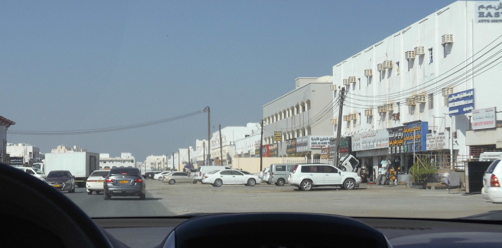
Kapitel 2: Ausflüge – Festungen, Wadis & alte Lehmdörfer
Das historische Barka Fort an der Küste
Unser erster Ausflug führte uns entlang der Küste nach Westen in die Stadt Barka. Direkt in Meeresnähe erhebt sich hier das eindrucksvolle Barka Fort. Die gewaltige Festung aus dem 17. und 18. Jahrhundert zeugt von der einstigen strategischen Bedeutung der Region für den Seehandel und den Schutz vor Eindringlingen.
Mit seinen mächtigen Lehm- und Steinmauern sowie den charakteristischen runden Wehrtürmen vermittelt das Bauwerk sofort das Gefühl, in die echte, lebendige Geschichte des Orients einzutauchen.
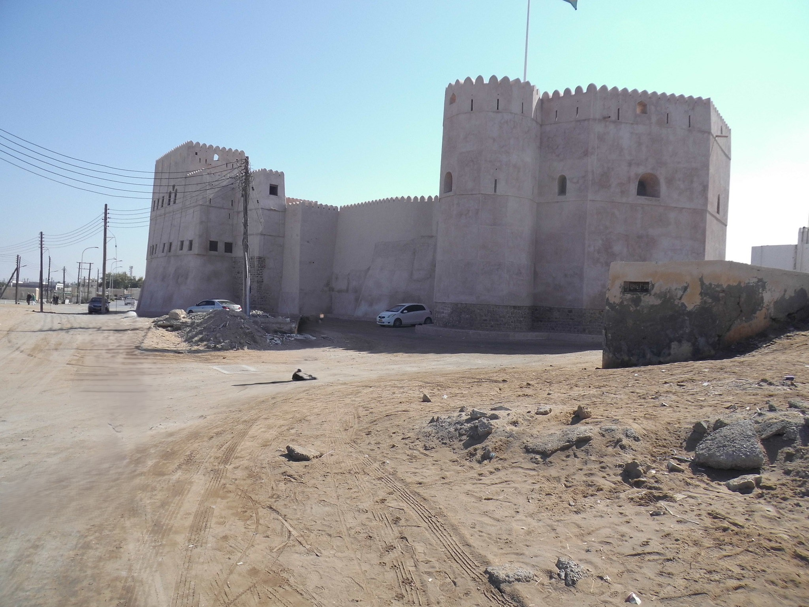
Kostbares Grün: Der schattenspendende Niembaum
In den weiten, staubtrockenen Ebenen des Oman wirkt jeder einzelne Baum wie eine kleine Oase. Besonders häufig trifft man hier auf den robusten Niembaum (Azadirachta indica), der ursprünglich vom indischen Subkontinent stammt und der extremen Wüstenhitze mühelos trotzt.
Mit seiner breiten Krone wirft er einen tiefen, kühlen Schatten auf den hellen Sandboden – ein unverzichtbarer Zufluchtsort in der Mittagssonne. Aus seinen gefiederten Blättern und kleinen Steinfrüchten werden zudem seit Jahrhunderten natürliche Heilmittel und Öle gewonnen.
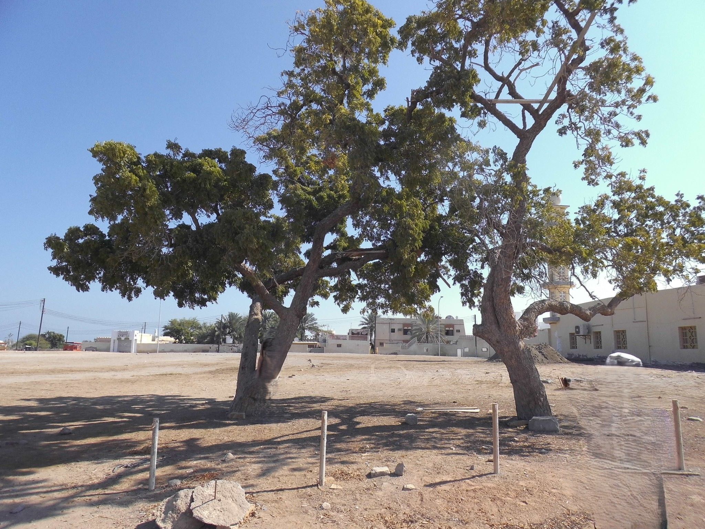
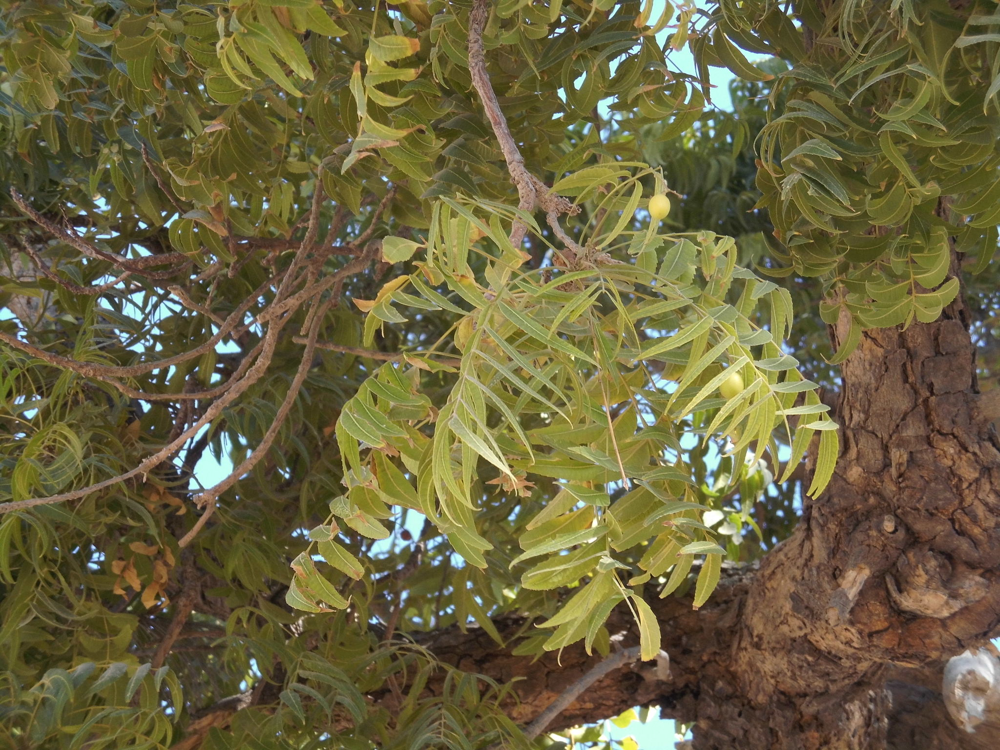
Kultur, Glaube und gelebte Ordnung
Überall im Land prägt die friedliche, traditionsbewusste Kultur das tägliche Leben. In fast jedem Viertel ragen kunstvoll verzierte Minarette mit feinen geometrischen Durchbrüchen in den Himmel – ruhige Orientierungspunkte, von denen fünfmal am Tag der Gebetsruf erklingt.
Gleichzeitig fällt sofort die außergewöhnliche Sauberkeit und Fürsorge im öffentlichen Raum auf: Selbst Parkplätze und Straßenränder werden mit Dattelpalmen, blühenden Sträuchern und akkurat geschnittenen Bäumen begrünt – liebevoll bewässert und eingefasst von den für den Oman so typischen gelb-schwarzen Bordsteinen.
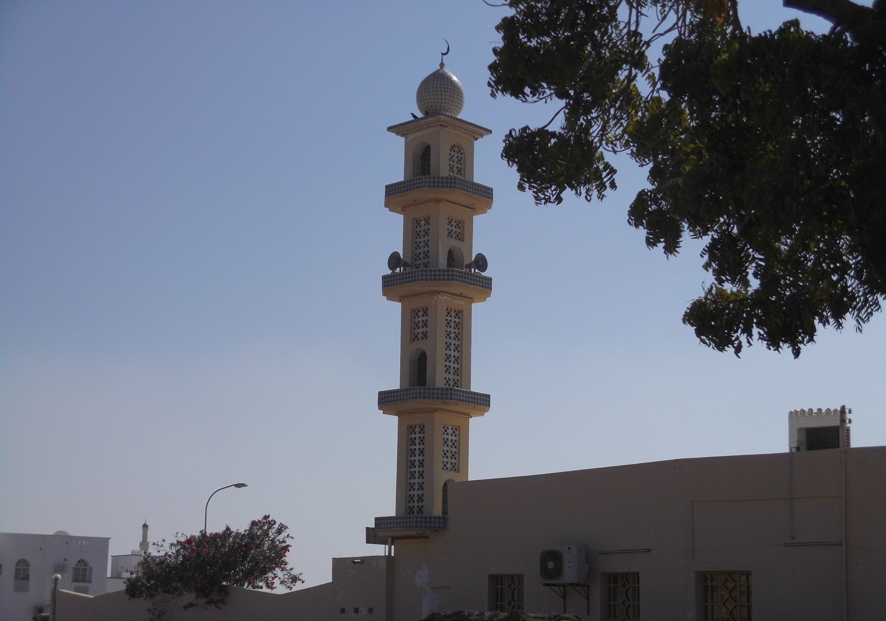
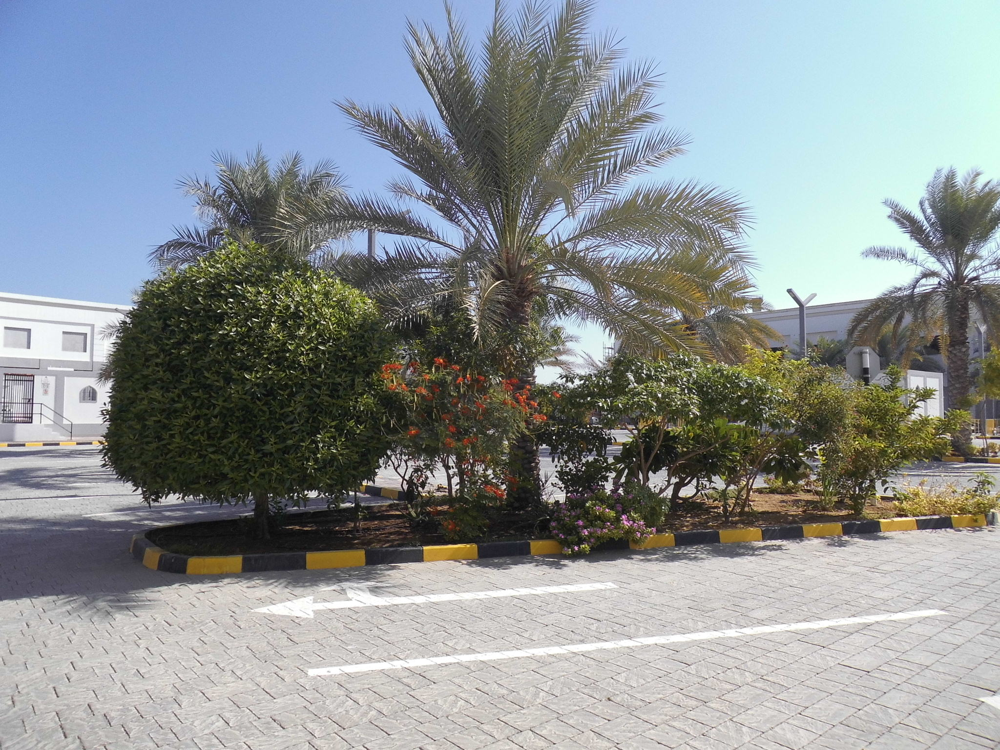
Monumentale Baukunst am Fuß der Berge
Auf unserer Fahrt weiter ins Landesinnere Richtung Rustaq tauchen entlang der gut ausgebauten Schnellstraßen immer wieder imposante Neubauten auf. Auf den ersten Blick wirken die hellen, zinnenbewehrten Komplexe mit ihren Arkaden fast wie Paläste oder Regierungsgebäude – doch die hohe goldene Kuppel und die beiden schlanken Minarette verraten sofort: Es ist die große Sultan-Qaboos-Moschee von Rustaq.
Typisch für den Oman fügt sich selbst diese monumentale Architektur in warmen Sand- und Weißtönen ganz selbstverständlich vor die schroffe, karge Kulisse des Hadschar-Gebirges ein.
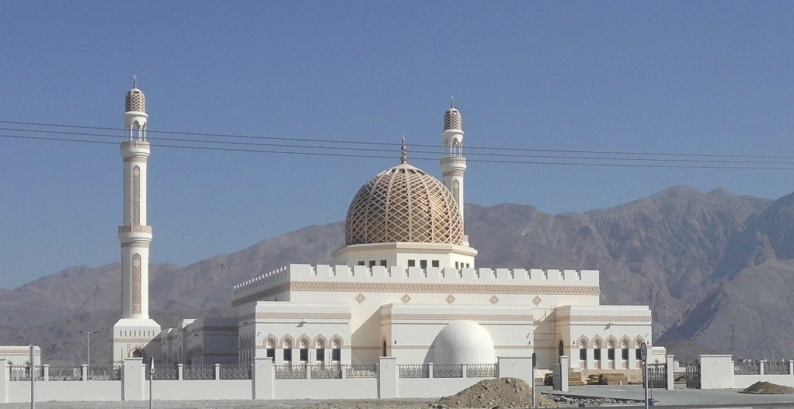
Felsfestung Nakhal Fort & gelebte Willkommenskultur
Weiter im Landesinneren erhebt sich auf einem schroffen Felsvorsprung am Fuß des Hadschar-Gebirges das gewaltige Nakhal Fort. Das Besondere an dieser jahrhundertealten Wehranlage: Die Baumeister passten die mächtigen Mauern und runden Türme direkt an die unregelmäßige Form des natürlichen Felsens an.
Dass Gastfreundschaft hier kein leeres Wort ist, spürten wir sofort: Schon auf dem Parkplatz kam uns ein Angestellter der Festung freundlich entgegen, um uns persönlich hinein zu lotsen – und im Vorhof begrüßt uns passend dazu eine überdimensionale Skulptur einer traditionellen omanischen Kaffeekanne (Dallah), dem wichtigsten Symbol für Willkommenskultur im Sultanat.
Direkt am Fuß der Festung kehrten wir anschließend in einen kleinen Coffee-Shop ein, wo uns ein angestellter Bangladeshi ganz offen ins Gespräch zog. Fernab seiner Heimat erzählte er uns lebhaft, woher er stammte und wie selten er seine Familie zu Hause sehen kann.
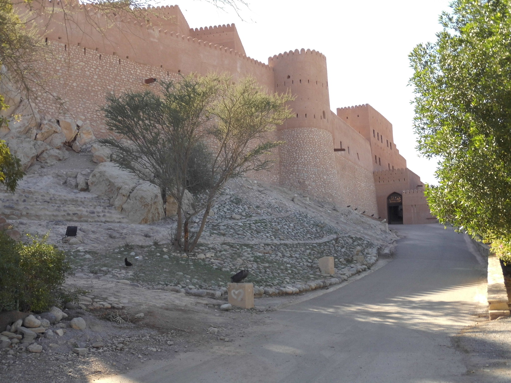
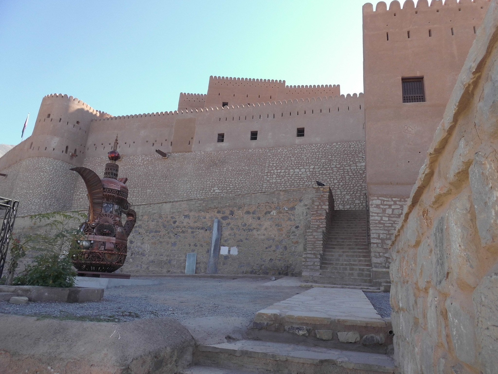
Lebensadern aus Stein und Wasser: Unterwegs im Wadi
Auf dem Weg ins Landesinnere durchqueren wir ein typisches Wadi – ein breites, ausgetrocknetes Flussbett aus hellem Geröll und Kieselsteinen. Was heute friedlich wie eine Schotterpiste wirkt, verwandelt sich nach seltenen, heftigen Regenfällen im Gebirge binnen Minuten in einen reißenden Strom.
Mitten in dieser kargen Flusslandschaft kam uns ein einheimischer Wanderer entgegen und entrichtete einen besonders würdevollen traditionellen Gruß: Mit der rechten Hand berührte er kurz sein Herz und seine Stirn – ein Zeichen tiefer Achtung und Herzlichkeit. Während er meinem Bruder freundschaftlich die Hand reichte, freute er sich sichtlich über meinen landestypischen Gruß mit der erhobenen Handfläche.
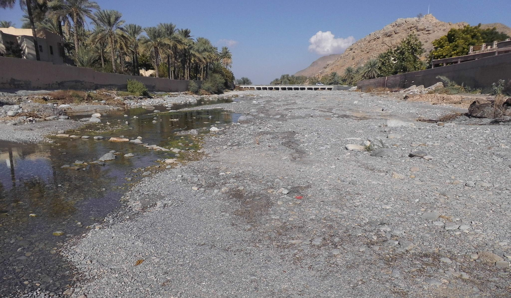
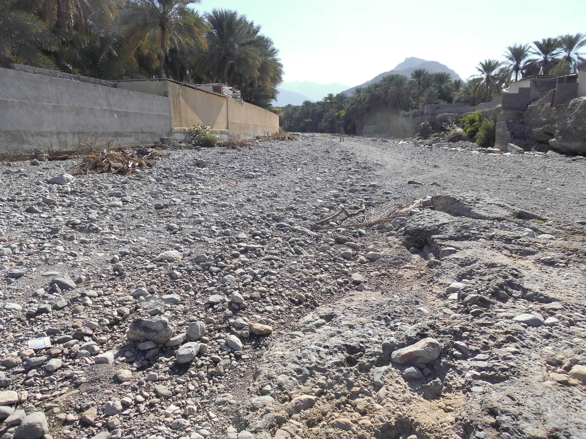
Weitblick über grüne Oasen im kargen Bergland
Von einer felsigen Anhöhe aus offenbart sich der ganze Zauber der omanischen Landschaft: Mitten in einer weiten, steinig-trockenen Ebene zieht sich ein dichtes, tiefgrünes Band aus tausenden Dattelpalmen entlang der Wasseradern.
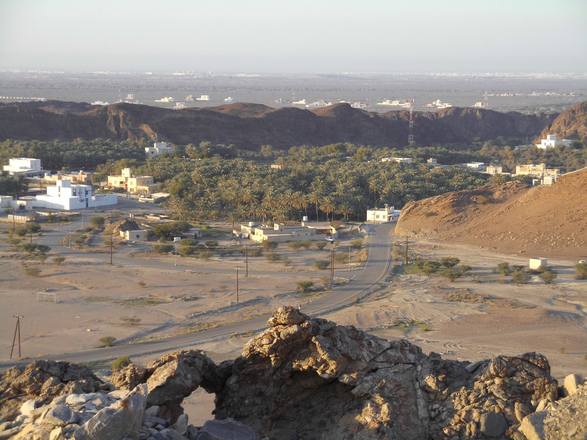
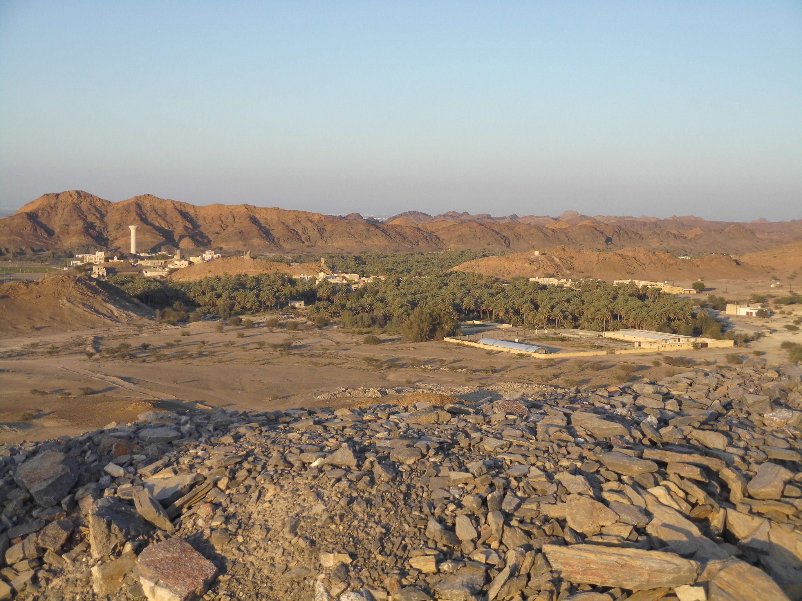
Wächter auf den Felsgipfeln im Wadi al-Maawil
Überall im Hadschar-Gebirge thronen uralte Wachtürme wie Adlerhorste auf den schroffen Felsgipfeln. Von diesen schwer zugänglichen Beobachtungsposten aus ließen sich einst die Handelswege durch die Täler und die wertvollen Oasen schon aus weiter Ferne überblicken.
Besonders eindrucksvoll wirkt das Zusammenspiel aus kargem Fels, tiefgrünen Dattelpalmen und den trutzigen Lehm- und Steintürmen, die bis heute über den Tälern wachen.
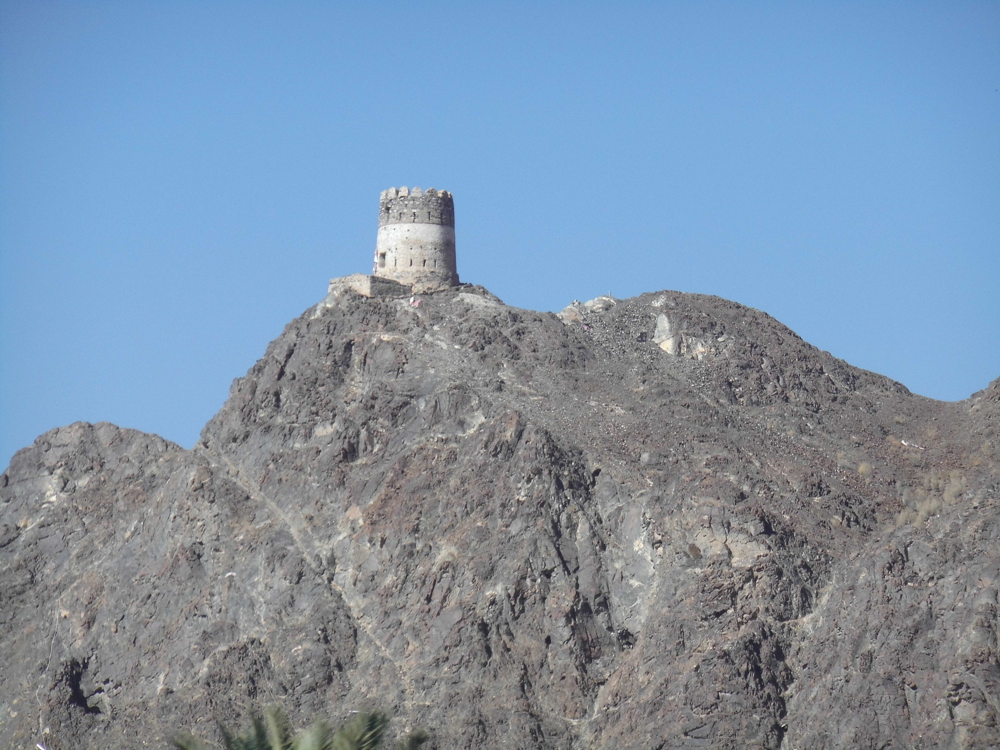
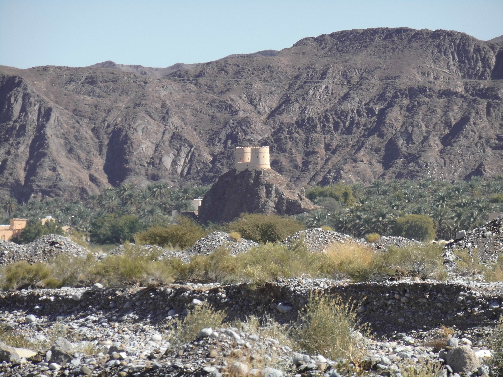
Architektur aus Lehm und Stein: Ein Wehrturm aus nächster Nähe
Mitten in der weiten, steinigen Ebene des Wadis stoßen wir auf einen freistehenden historischen Lehmturm, den wir uns aus nächster Nähe ansehen können. Seine zinnenbewehrte Krone und die schmalen Schießscharten zeugen von einer bewegten Vergangenheit.
Ein spannendes Detail fällt beim Blick nach oben sofort auf: Die schwere Holztür liegt mehrere Meter über dem Erdboden – im Ernstfall wurde die Leiter eingezogen, sodass der Turm für Angreifer praktisch uneinnehmbar war.
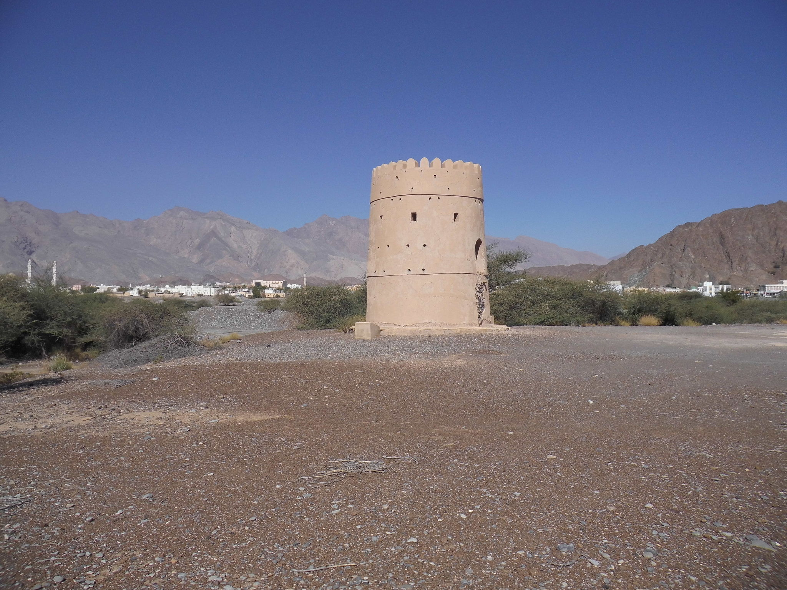
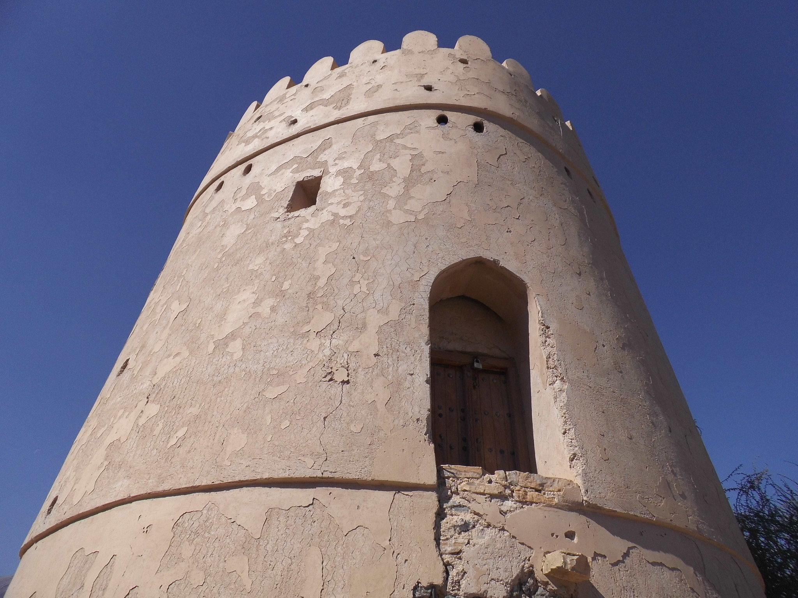
Hoch über dem Tal: Die Felsenfestung Samail Fort
Auf unserer Fahrt durch das Landesinnere erreichten wir das imposante Samail Fort (Hisn Samail), eine der ältesten und strategisch wichtigsten Wehranlagen des Sultanats. Wie aus dem Fels gemeißelt thront die Festung auf einem steilen Bergrücken und überwachte über Jahrhunderte hinweg die wichtige Handelsroute zwischen der Küste und dem Inneren des Omans.
Besonders beeindruckend ist die gestufte Architektur: Vom wuchtigen Eingangsportal mit der wehenden Nationalflagge ziehen sich die hohen Lehm- und Steinmauern den schroffen Hang hinauf bis zum runden Hauptturm hoch über dem Tal.
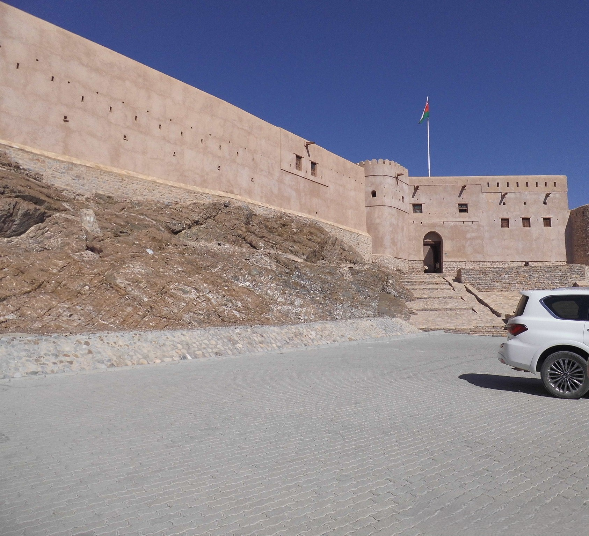
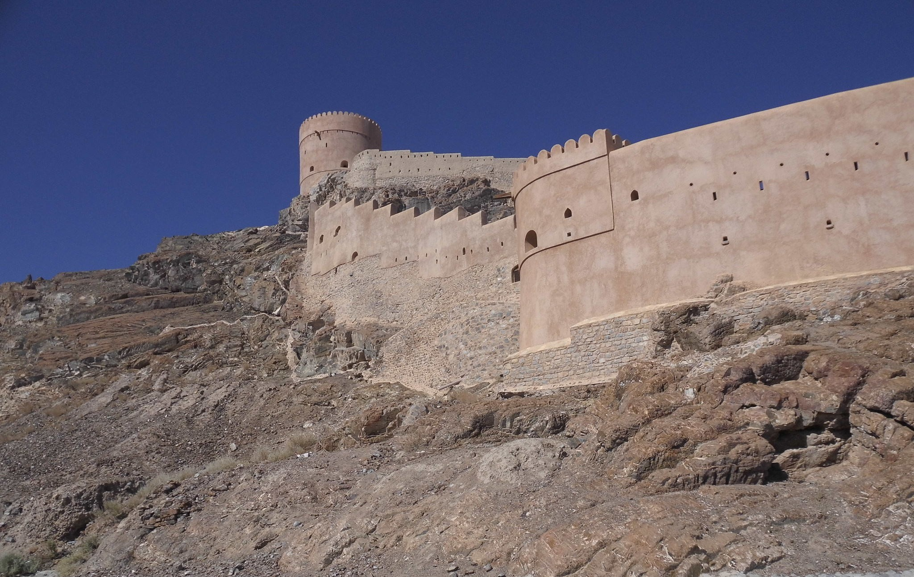
Vergessene Lehmmauern am Rand der Oase
Am Rande einer kleinen Siedlung stießen wir auf ein verlassenes, weitläufiges Gehöft aus traditionellen Lehmbauten. Zwischen den verfallenen Mauern, offenen Rundbögen und schmalen Gassen wirkt es, als hätten die Bewohner das alte Anwesen erst vor Kurzem aufgegeben und wären in die modernen Steinhäuser nebenan umgezogen.
Direkt hinter den bröckelnden Lehmwänden beginnt das tiefe Grün der Dattelpalmen-Oase – ein faszinierender Kontrast zwischen Vergänglichkeit und üppigem Leben.
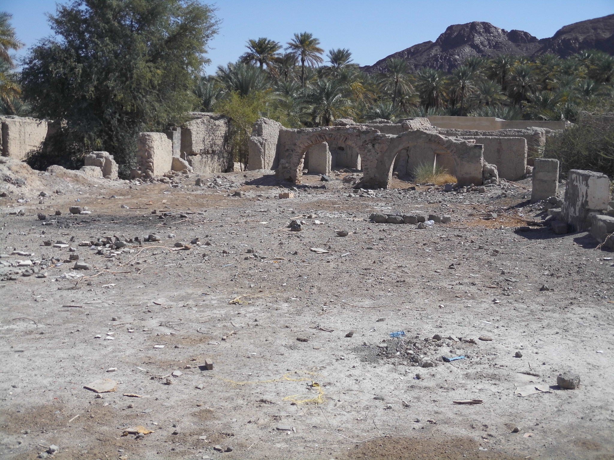
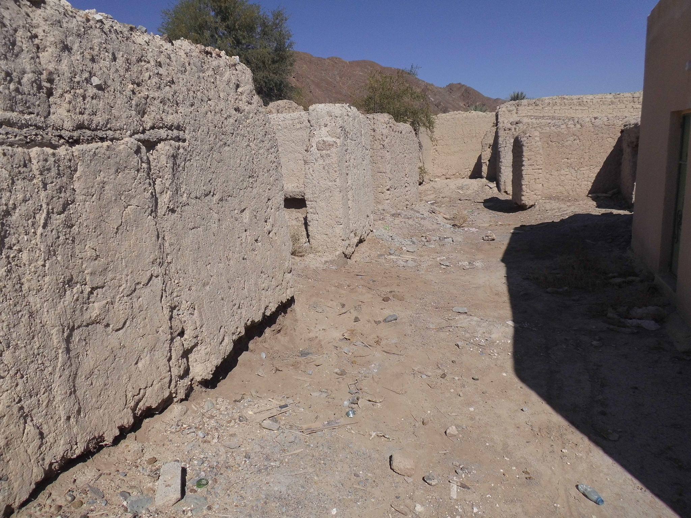
Alte Holztüren, neugierige Blicke und eine Einladung in die Oase
Beim genaueren Hinsehen entdecken wir in den Ruinen spannende Spuren traditioneller Handwerkskunst: Die dicken Wände bestehen aus handgeformten Lehmziegeln, und im Sand liegt noch ein schweres, verwittertes Holztor mit alten Eisennägeln und Türangeln.
Unsere Erkundungstour blieb im Dorf nicht unbemerkt: Erst schlichen sich einige Bewohner neugierig heran, um zu beobachten, was wir dort fotografierten – einer machte schnurstracks kehrt, als er uns bemerkte. Was ein Zeichen des Respektes ist. Ein anderer Einheimischer hingegen kam freundlich auf uns zu und lud uns herzlich ein, seine private Dattelpalmen-Oase von innen anzusehen, was wir aus Rücksicht und Zeitgründen jedoch dankend ablehnten.
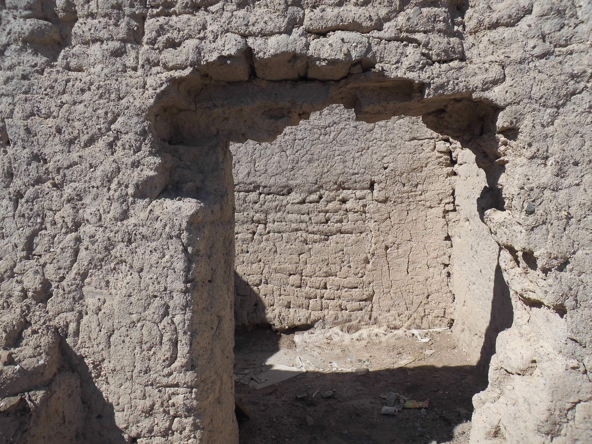
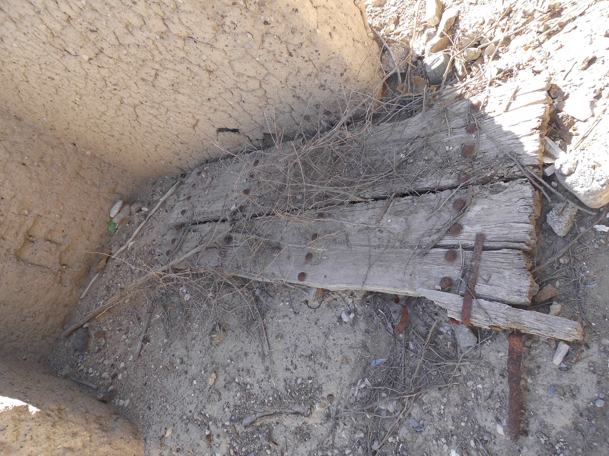
Endlose Steinwüste und der wertvollste Schatten weit und breit
Abseits der grünen Oasen zeigt der Oman sein raues, unerbittliches Gesicht: Eine weite, flache Stein- und Kieswüste erstreckt sich bis zu den kargen Bergketten des Hadschar-Gebirges. In dieser offenen Ebene gibt es kaum Deckung vor der erbarmungslosen Sonne.
Nur vereinzelt trotzen zähe, dornige Akaziensträucher (Samr) der Trockenheit – und genau unter einem solchen einsamen Baum parkten wir unseren Mietwagen im einzigen Schatten weit und breit.
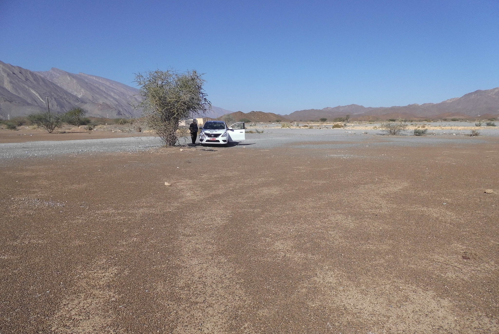
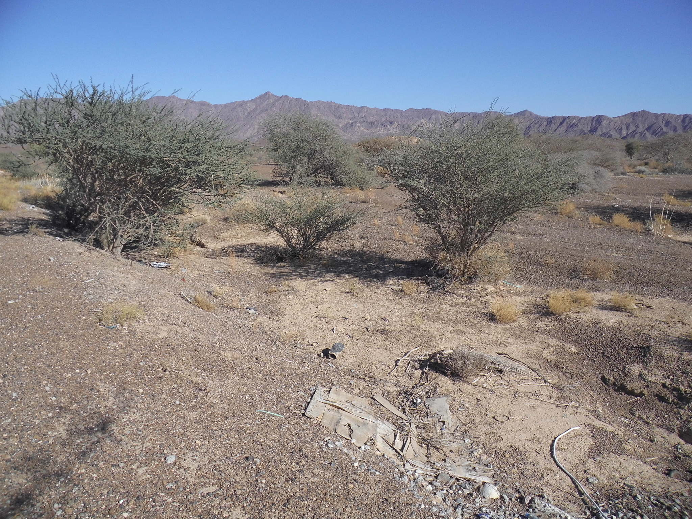
Vergängliche Monumente: Die verfallende Lehmfestung von Izki
Auf unserer Route durch das Landesinnere stießen wir auf die beeindruckenden Ruinen der historischen Festungs- und Lehmsiedlung von Izki am Fuß des Hadschar-Gebirges. Schon von Weitem wirken die gewaltigen, gezackten Mauerreste wie ein natürlicher Teil der schroffen Berglandschaft.
Aus der Nähe wird sichtbar, warum viele dieser historischen Bauten heute verfallen: Während die unteren Sockel und runden Ecktürme aus geschichteten Natursteinen errichtet wurden, bestehen die oberen Mauern aus sonnengetrocknetem Lehm. Sobald die Lehmgebäude nicht mehr bewohnt und regelmäßig neu verputzt werden, waschen die seltenen, aber heftigen Regenfälle im Gebirge die Wände Jahr für Jahr weiter aus.
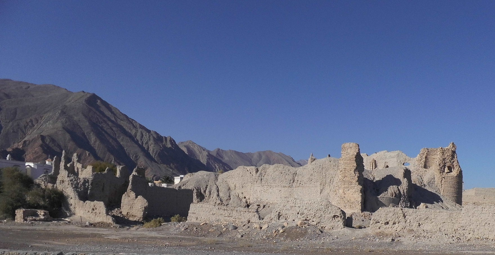
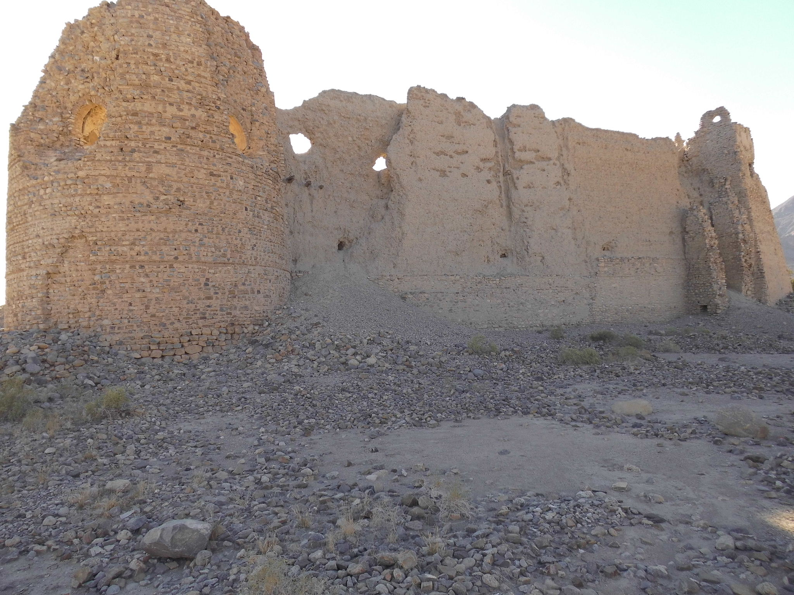
Bögen, Säulen und Schießscharten: Einblicke in die Baukunst
Im Inneren der offenen Ruinen lassen sich die durchdachten Architekturelemente der traditionellen omanischen Lehmbaukunst noch erstaunlich gut erkennen. Hohe Spitz- und Rundbögen verbinden die ehemaligen Höfe und Hallen und sorgten einst für angenehme Luftzirkulation in der Sommerhitze.
Besonders eindrucksvoll sind die wuchtigen runden Säulen mit ihren eckigen Kapitellen, auf denen noch heute schwere Lehmbögen ruhen, sowie die hoch gelegenen schmalen Schießscharten und kleinen Wandnischen für Öllampen.
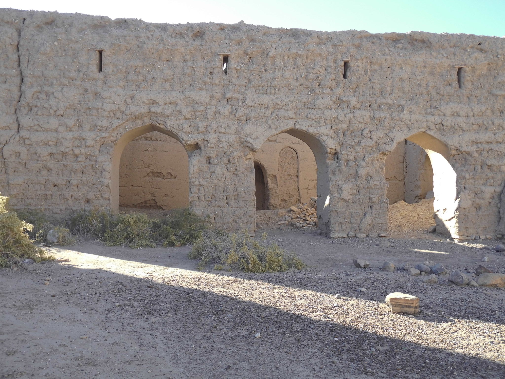
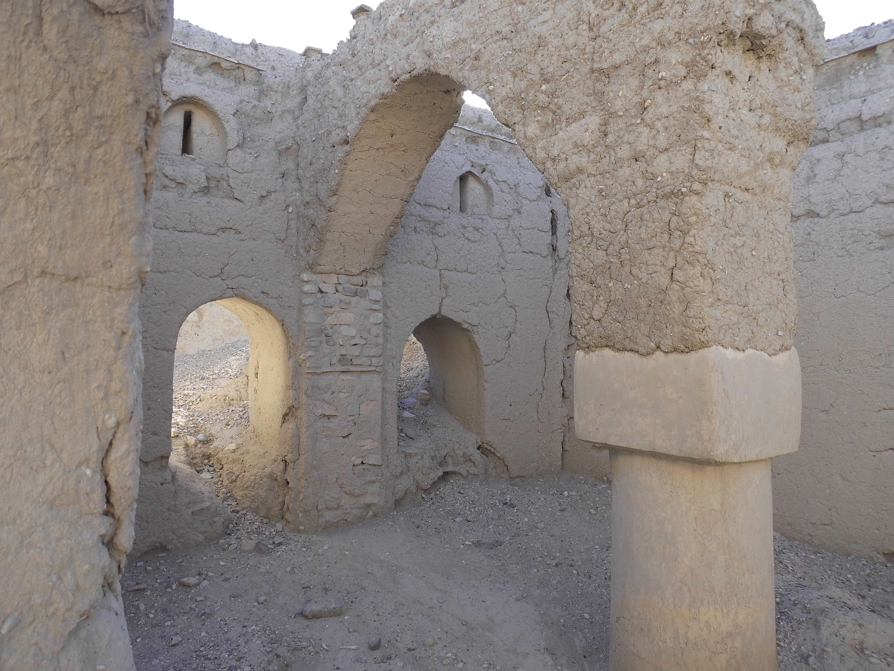
Kapitel 3: Spaziergang durch eine vergessene Welt – Die verlassene Lehmsiedlung
Aufgegeben in den 1970er-Jahren: Ein Dorf aus Lehm und Stein
Abseits der modernen Straßen tauchten wir ein in ein weitläufiges, verlassenes Lehmviertel (Harat) mit alten Markt- und Wohngassen. Bis in die 1970er- und 1980er-Jahre hinein herrschte hier reges Leben – erst als im Zuge der Modernisierung des Landes direkt nebenan neue Steinhäuser mit Strom, Wasserleitungen und Zufahrten für Autos entstanden, gaben die Bewohner ihre alten Lehmhäuser auf.
Gut erkennbar ist noch heute die typische zweistöckige Bauweise auf soliden Natursteinsockeln, die den Gebäuden Halt gegen Bodenfeuchtigkeit gaben.
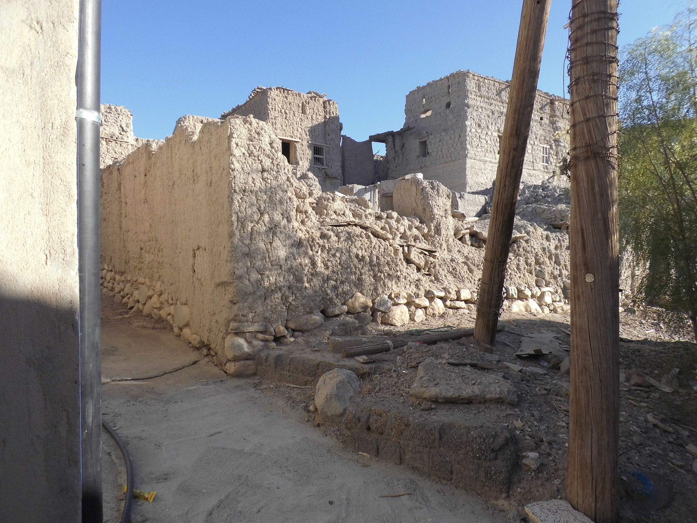
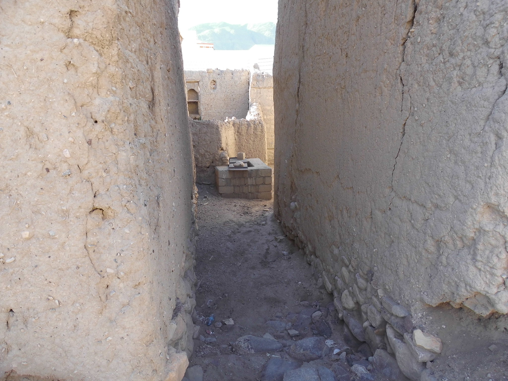
Architektur gegen die Sommerhitze: Enge Gassen als Schattenspender
Was aus heutiger Sicht romantisch-verwinkelt wirkt, folgte einst einer strengen klimatischen Logik: Die Gassen wurden bewusst so schmal angelegt, dass die hohen Lehmwände der gegenüberliegenden Häuser sich fast den ganzen Tag über gegenseitig Schatten spendeten.
Zusammen mit den dicken, wärmespeichernden Lehmziegelmauern entstand so eine natürliche Klimaanlage, die das Leben und Handeln im alten Marktviertel selbst bei über 45 Grad im Sommer erträglich machte.
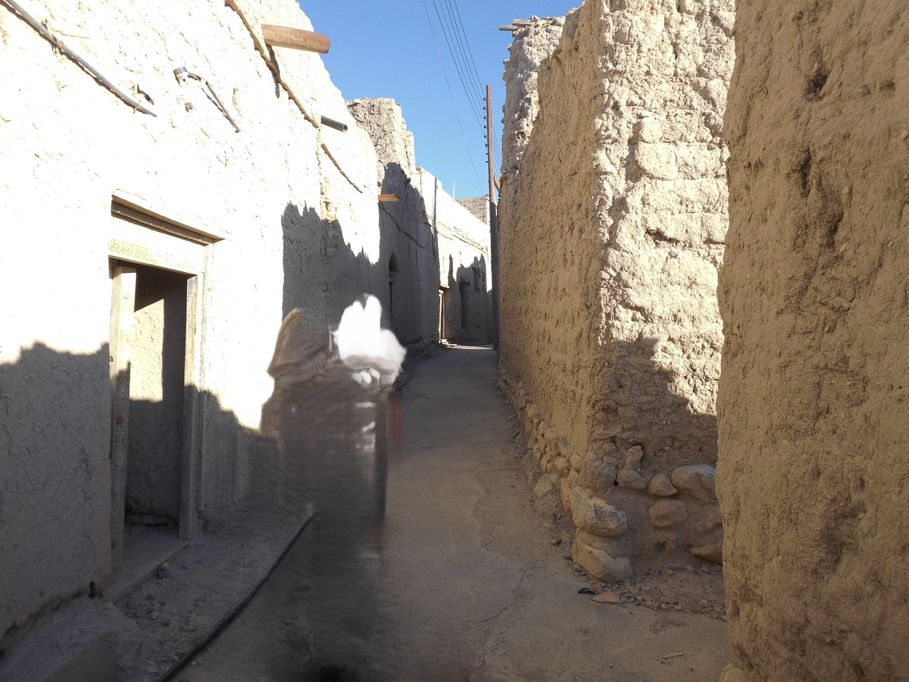
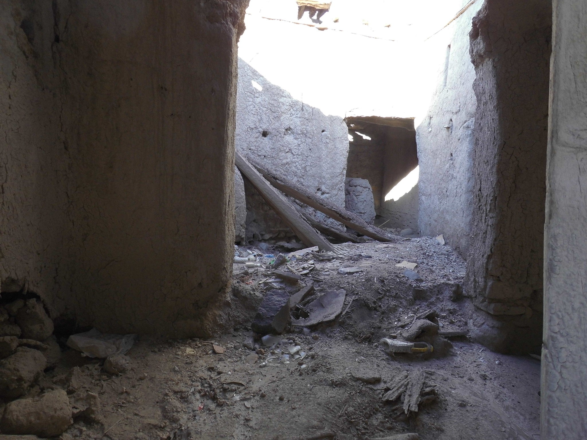
Wo einst gehandelt wurde: Marktgassen und Torbögen
Entlang der breiteren Wege und unter gemauerten Torbögen lag einst das geschäftige Herz der Siedlung – der alte Markt (Suq). Hinter den verwitterten Holztüren und schlichten Eingängen im Erdgeschoss befanden sich kleine Verkaufsräume, Werkstätten und Lagerräume für Datteln, Gewürze und Alltagsgegenstände, während im oberen Stockwerk die Familien wohnten.
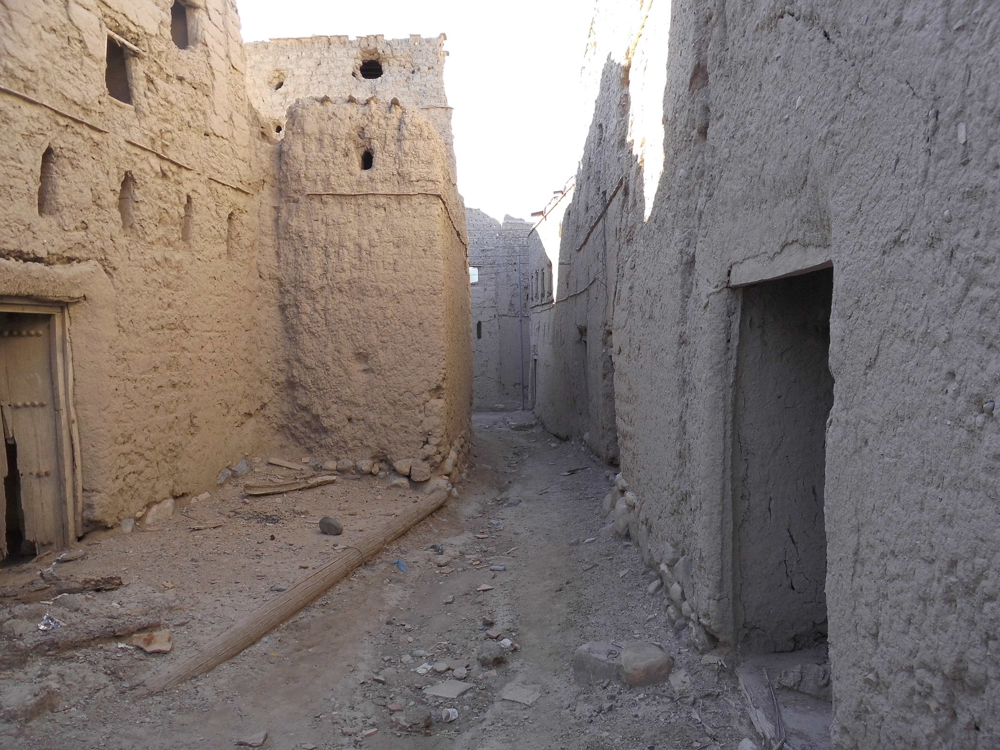
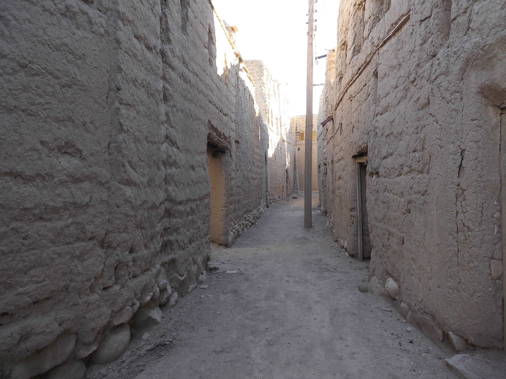
Ein Blick ins Innere: Steile Treppen und eingestürzte Dächer
Durch offene Durchgänge fällt der Blick in das stille Innere der ehemaligen Wohn- und Geschäftsräume. Über schmale, aus Lehm und Stein geformte Treppen gelangte man hinauf in das Obergeschoss und auf die flachen Dachterrassen, auf denen in heißen Sommernächten oft unter freiem Himmel geschlafen wurde.
Wo das Dach nicht mehr standhielt, liegen heute die schweren Deckenbalken aus Palmenholz im Staub der verlassenen Räume.
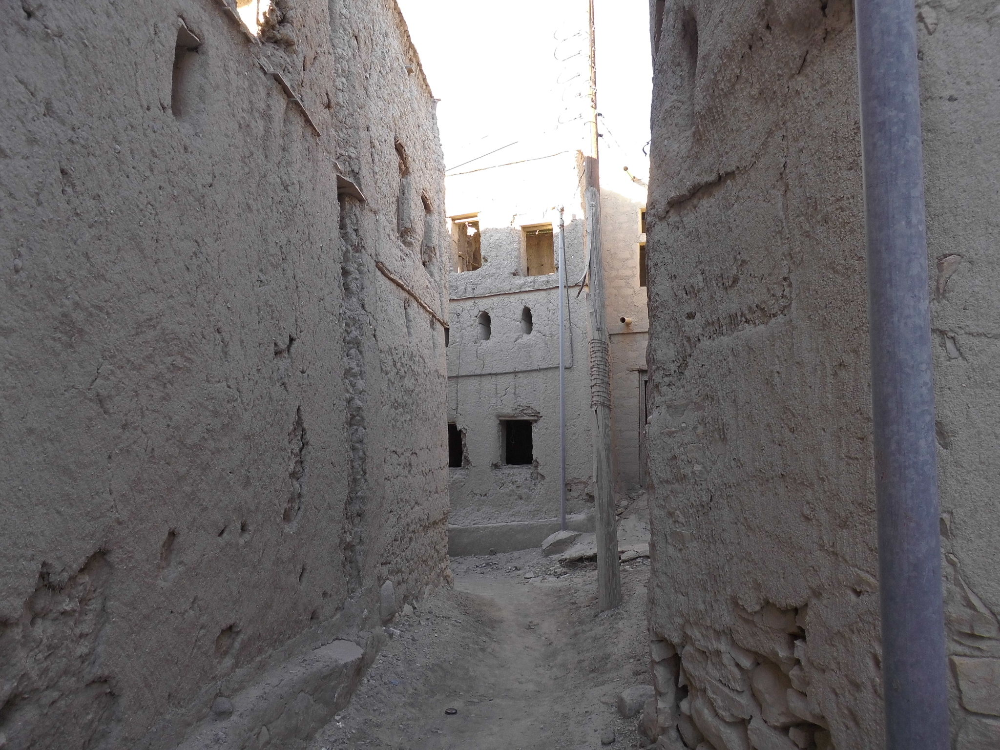
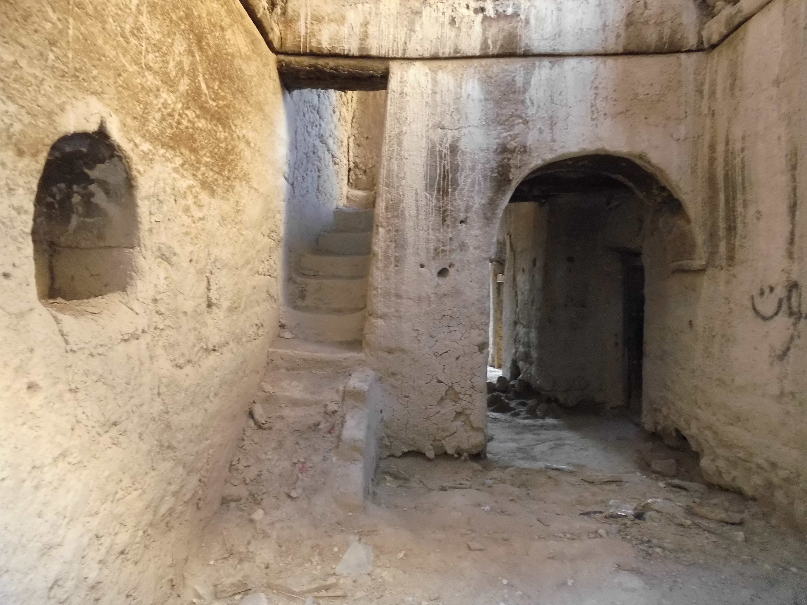
Versteckte Schönheit: Kunstvolle Ornamente hinter schlichten Mauern
Während die Außenfassaden der Lehmhäuser bewusst schlicht und abweisend gestaltet waren, offenbart ein genauer Blick nach oben die Liebe zum Detail: Durch eine hoch gelegene Fensteröffnung entdeckt man die traditionelle Deckenkonstruktion aus Palmblattmatten und Holzbalken, die aufwendig mit geometrischen Ornamenten bemalt wurden.
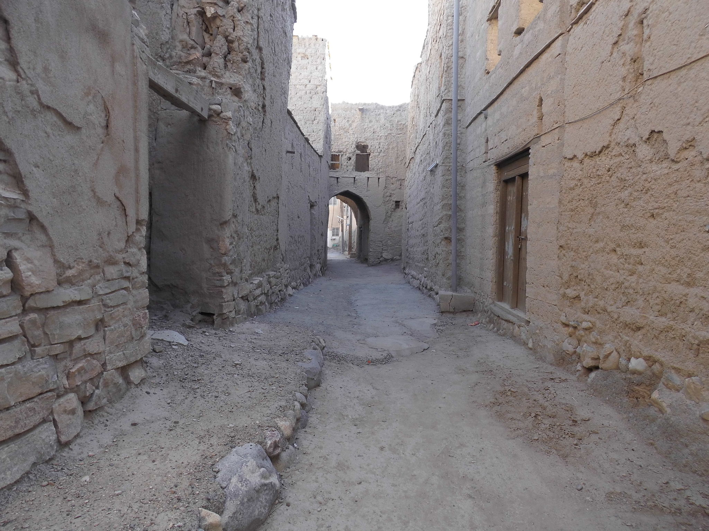
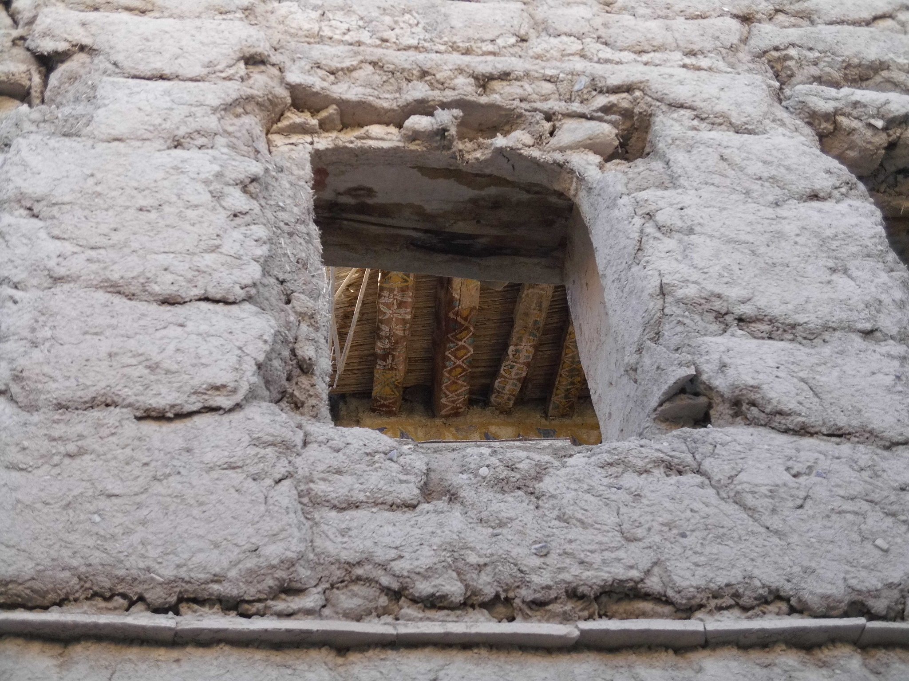
Versteckte Schönheit: Historische Wandmalereien hinter schlichten Mauern
Während die Außenfassaden der Lehmhäuser bewusst schlicht und abweisend gestaltet waren, offenbart ein genauer Blick nach oben durch die Fensteröffnungen im Obergeschoss eine echte Überraschung: Im ehemaligen Empfangsraum (Majlis) haben sich bis heute farbenfrohe Wandmalereien in Gelb- und Blautönen erhalten.
Neben geometrischen Friesen prangt eine stilisierte Dattelpalme – das wichtigste Symbol für Leben und Wohlstand im Oman – an der Wand, darüber ruht die traditionelle Deckenkonstruktion aus Palmblattmatten und kunstvoll verzierten Holzbalken.
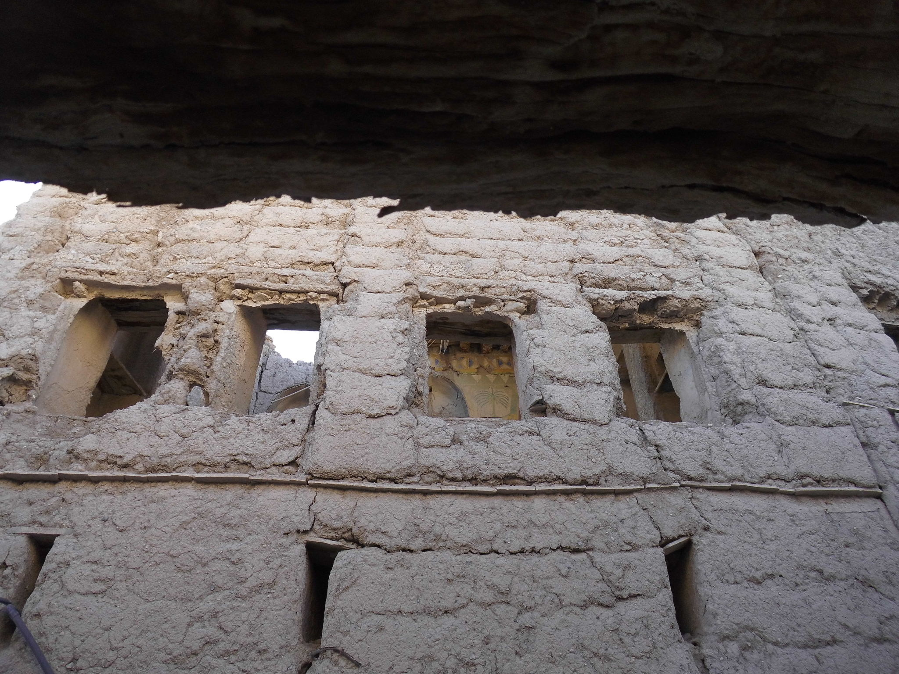
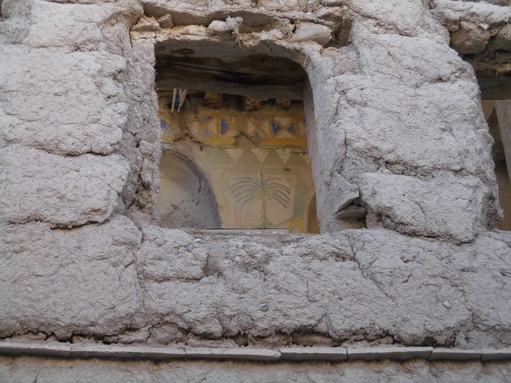
Unsere Ausflugsrouten im Überblick
Durch monumentale Stadttore ins Herz des Omans
Von unserem Ausgangspunkt in Maskat aus erschließen sich die historischen Festungen und Oasen des Nordens auf gut ausgebauten Überlandstraßen. Ein besonderes Markenzeichen auf diesen Routen sind die gewaltigen, im traditionellen Festungsstil errichteten Stadttore wie hier das Stadttor von Samail, die wie moderne Triumphbögen die Zufahrten zu den großen Oasenstädten markieren.
Geografisch lassen sich unsere Entdeckungstouren in zwei klassische Tagesrouten entlang und durch das Hadschar-Gebirge gliedern:
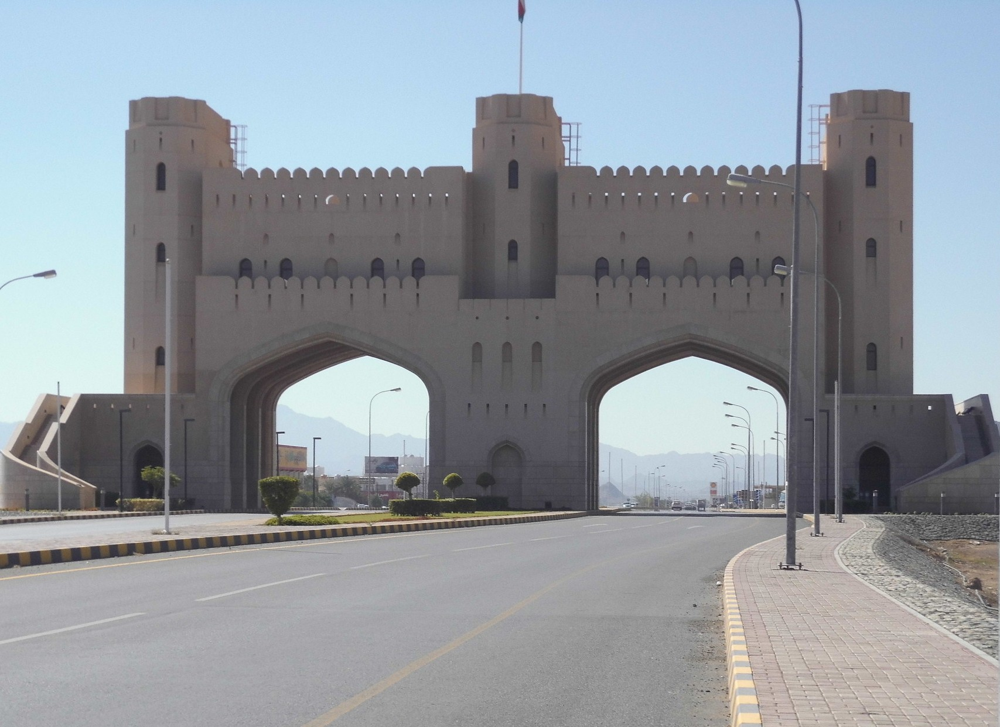
Route 1: Küste & Westliches Hadschar-Vorland
Von der Batinah-Küste hinein zu den Bergfestungen und Wachtürmen:
- Start – Maskat (Al Ghubrah): Fahrt entlang der Küstenstraße nach Nordwesten.
- Barka Fort: Erste Station an der historischen Küstenfestung.
- Wadi al-Maawil: Abstecher ins steinige Flussbett, vorbei an alten Gipfel-Wachtürmen.
- Nakhal Fort: Besuch der mächtigen Felsfestung am Fuß des Gebirges.
- Rustaq: Vorbeifahrt an der großen Sultan-Qaboos-Moschee vor den Bergen.
Route 2: Durch die „Samail-Lücke“ ins Landesinnere
Auf der historischen Handelsachse mitten durch das Hadschar-Gebirge:
- Start – Maskat: Fahrt nach Südwesten durch das tief eingeschnittene Gebirgstal.
- Stadttor & Samail Fort: Durchfahrt durch das monumentale Tor zur Felsenfestung Hisn Samail.
- Steinwüste & Oasenränder: Rast unter einsamen Akazienbäumen vor der Bergkulisse.
- Izki & verlassene Lehmsiedlungen: Erkundung der erodierten Lehmfestung und der alten Markt- und Wohngassen (Harat).
Kapitel 4: Zwischen schroffen Felsen und Gezeiten – Die Mangrovenküste
Über staubige Pisten zu einer verborgenen Küstenwelt
Abseits der ausgebauten Küstenstraßen führte uns eine staubige Schotterpiste entlang schroffer, geschichteter Felswände hinunter zu einer geschützten Meereslagune (wie man sie rund um Bandar Al Khairan südöstlich von Maskat findet).
Auf den Felsen gibt es absolut keine Vegetation. Sie bestehen aus Ur-Meeresboden, der vor rund 90 Millionen Jahren über das Land geschoben wurde. Ophiolith bricht scharfkantig und ist für Pflanzenwurzeln weitgehend ungeeignet. Eine natürliche Bodenbildung findet auch nicht statt. Starkregen spühlt alles weg.
Hier zeigt sich eine überraschend grüne Seite des Sultanats: Direkt im salzigen Küstenwasser wurzeln zähe, hitzeresistente Mangroven (Avicennia marina). Im flachen Uferschlick erkennt man deutlich ihre dicht stehenden, fingerartigen Atemwurzeln, mit denen die Pflanzen bei Ebbe Sauerstoff aufnehmen – ein unverzichtbarer Lebensraum für Fische, Krabben und Küstenvögel.
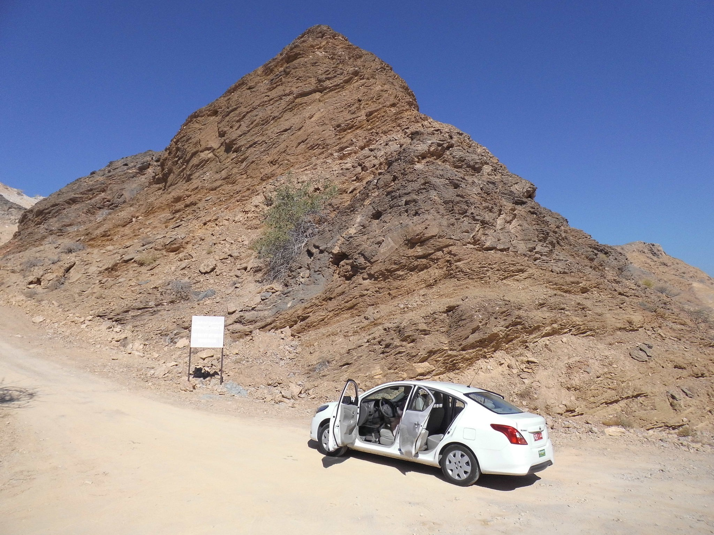
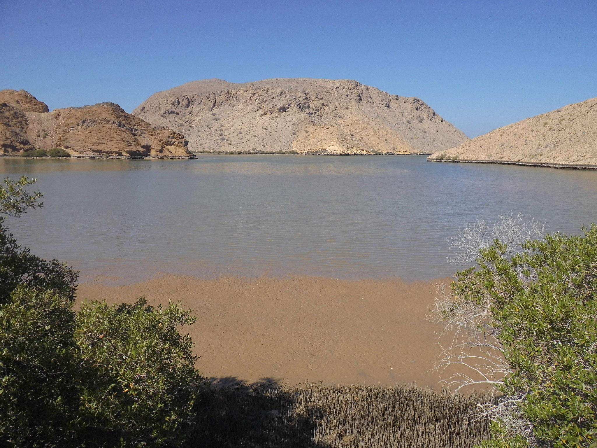
Ebbe in der Lagune: Der Küstenschlick
Bei Ebbe verwandelt sich die ruhige Bucht in eine weitläufige Wattlandschaft: Das Meerwasser zieht sich zurück und legt fein gezeichnete Sand- und Schlickbänke frei, während am gegenüberliegenden Fuß der kargen Berge das tiefgrüne Band der Mangrovenwälder leuchtet.
Über die dunklen Uferfelsen hinunter stiegen wir direkt an den Rand des feuchten Watts, um die kleinen Bewohner des Gezeitenbereichs – unzählige winzige Winkerkrabben und Meeresschnecken – aus nächster Nähe zu beobachten.
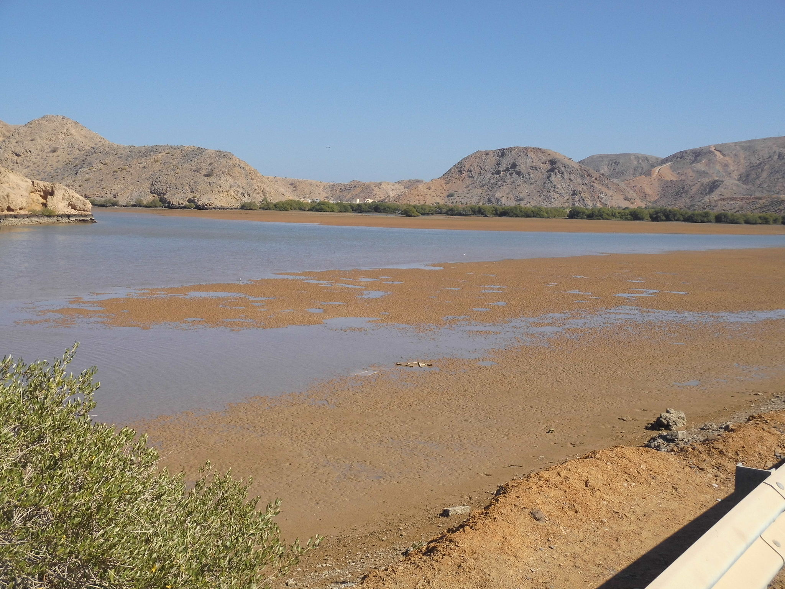
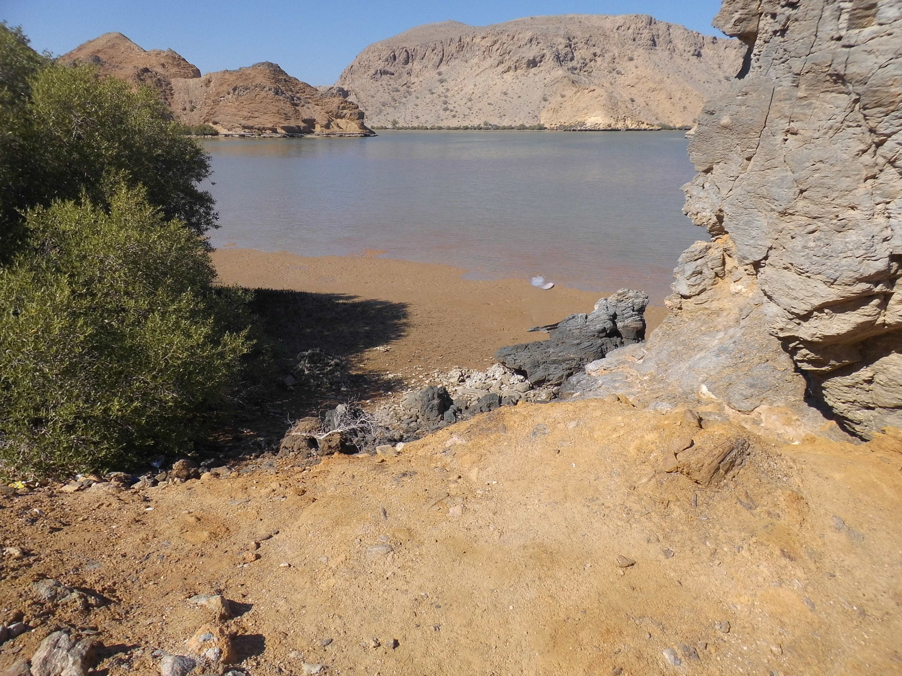
Kapitel 5: Glanzvolles Maskat – Der Al-Alam-Palast
Farbenfrohe Eleganz und blühende Gärten trotz Wüstenhitze
Den krönenden Abschluss unserer Reise bildete der Besuch am Al-Alam-Palast, dem zeremoniellen Sitz des Sultans im historischen Herzen von Alt-Maskat. Statt auf überladenen Prunk setzt die Architektur auf makellose Sauberkeit, großzügige Plätze und die markanten blau-goldenen Säulen der Hauptfassade.
Besonders beeindruckend ist die kunstvolle Bepflanzung rund um den Palastplatz: Trotz der intensiven Sonne und Trockenheit leuchten entlang der Terrassen farbenfrohe Blumenrabatten, während schlanke, hitzeresistente Bäume vor den kargen Felswänden des Küstengebirges akkurate grüne Akzente setzen.
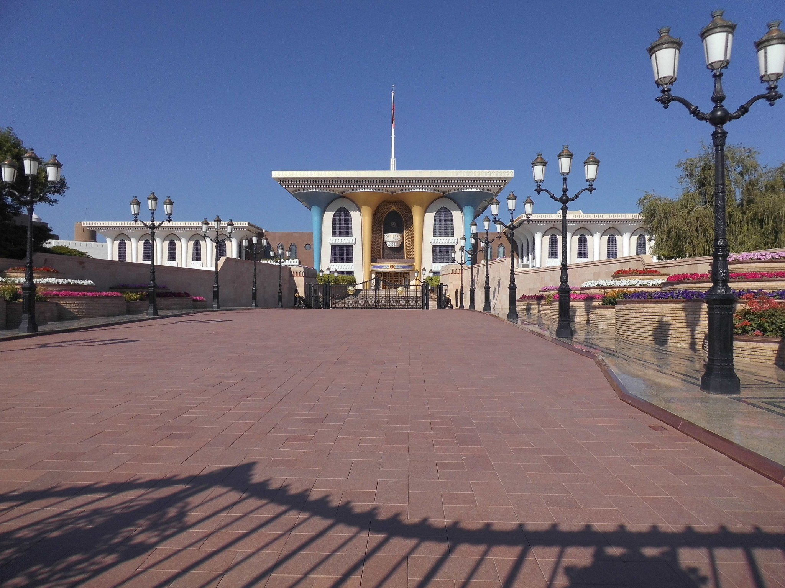
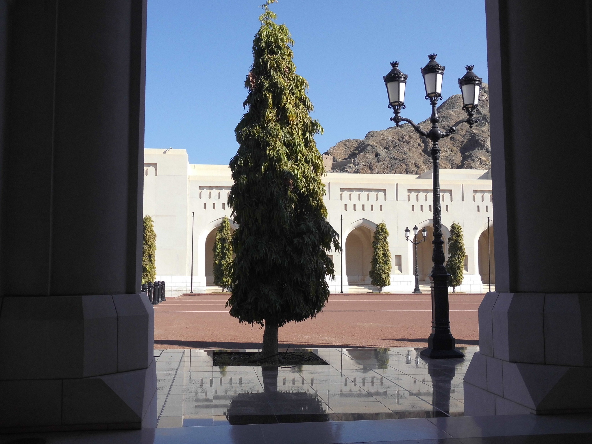
Stille Symmetrie: Durch die hohen Marmorkolonnaden
Eingerahmt wird der weitläufige Vorplatz von kilometerlangen, spitzbogigen Säulengängen aus hellem Naturstein und spiegelglatt poliertem Marmor. Unter den hohen Gewölben herrscht selbst in der Mittagssonne eine angenehme, fast feierliche Kühle und Stille.
Der Blick durch die streng symmetrischen Arkadenreihen verdeutlicht, was Maskat so einzigartig macht: eine moderne, repräsentative Baukunst, die traditionelle islamische Formen aufgreift, ohne jemals protzig zu wirken.
Bewegte Eindrücke: Unterwasserwelt & Roadtrip-Atmosphäre
Klicke auf ein Video, um es in der großen Vollbild-Ansicht abzuspielen.
Leben im flachen Küstenwasser
Kleine Fischschwärme tummeln sich im glasklaren, warmen Wasser am Golf von Oman.
Roadtrip durch das Sultanat (Teil 1)
Blick aus dem fahrenden Mietwagen auf die gut ausgebauten Straßen.
Fahrt in die Bergwelt (Teil 2)
Die Pisten schlängeln sich tiefer in das gewaltige Hadschar-Gebirge.
Ausklang: Kleine Alltagsdetails & Abschied vom Sultanat
Zweisprachige Schilder, schwarz-weiße Masten und ein letztes „Qif“
Manchmal sind es die unscheinbaren Dinge am Straßenrand, die ein Reiseland unverwechselbar machen: Im gesamten Oman fallen sofort die einheitlich schwarz-weiß lackierten Schilderpfosten sowie die zweisprachige Beschilderung ins Auge – vom Zebrastreifen-Schild vor Dattelpalmen bis zum markanten roten Stoppschild mit dem arabischen „قف“ (Qif – Halt).
Nach eindrucksvollen Tagen zwischen einsamen Wadis, verlassenen Lehmdörfern, der stillen Mangrovenküste und dem glanzvollen Maskat heißt es auch für uns: Qif – innehalten, die Eindrücke sacken lassen und Abschied nehmen von einem Land voller stiller Würde und Gastfreundschaft.